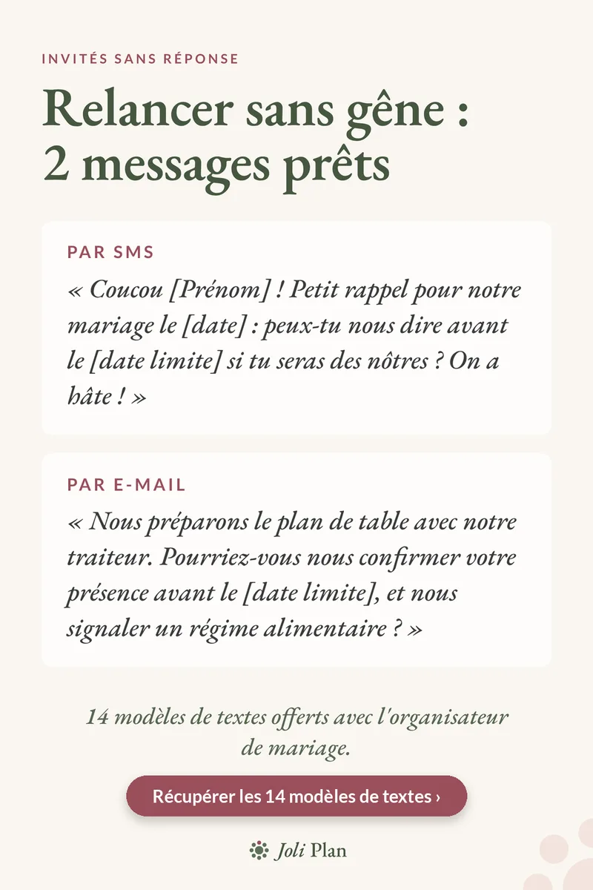

Invités
Relancer les invités de mariage sans réponse : 2 messages à copier
Mis à jour le 25/10/2026
La date limite de réponse est passée et quelques invités restent silencieux. Le plus simple : un message court, chaleureux, avec une nouvelle date. Voici deux modèles à copier.
Voir l'organisateur de mariage sur Etsy ›

Par SMS
Coucou [Prénom] ! Petit rappel pour notre mariage le [date] : peux-tu nous dire avant le [date limite] si tu seras des nôtres ? On a hâte !
Par e-mail
Nous préparons le plan de table avec notre traiteur. Pourriez-vous nous confirmer votre présence avant le [date limite], et nous signaler un régime alimentaire ?
Quelques conseils
- Donnez une raison concrète (le traiteur, le plan de table) : la relance paraît moins insistante.
- Fixez une nouvelle date limite précise.
- Notez les réponses au fur et à mesure pour savoir qui relancer.
Questions fréquentes
Quand relancer les invités qui n'ont pas répondu ?
Juste après la date limite de réponse, avec une nouvelle date précise.
Comment relancer sans paraître insistant ?
Donnez une raison concrète, comme le plan de table ou le traiteur, et gardez un ton chaleureux.